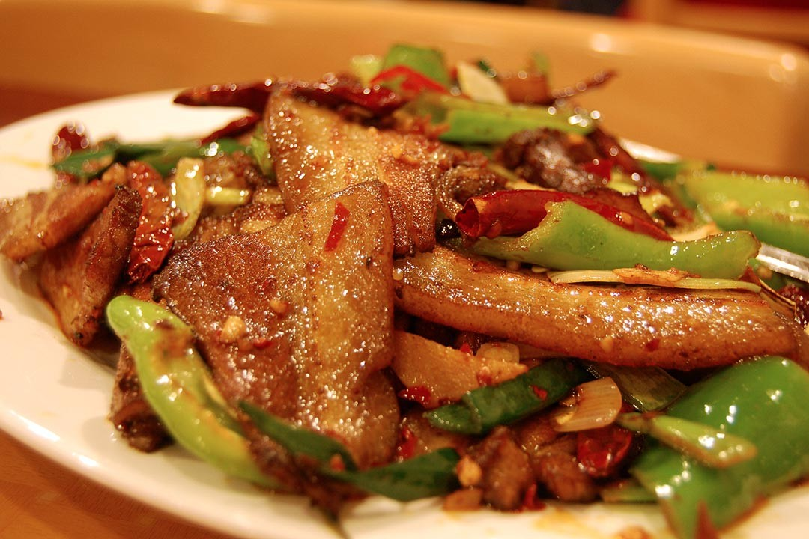

Twice Cooked Pork

Description
Twice Cooked Pork, hui guo rou in Mandarin, is an excellent dish that originated
in the Sichuan province of China, a province know for its incredibly spicy food! Twice
Cooked Pork is often served with vegetables and peppers and is a very colorful dish. It is
flavor-packed and goes well with rice in particular, though I think it's flavors are so
flexible that it would be well-paired with any grain one coould find in the world!
Ingredients
- 11 ounces skin-on, boneless pork belly
- 1 (3/4 inch thick) slice fresh ginger, lightly smashed
- 1/4 teaspoon Sichuan peppercorns
- 1 1/2 tablespoons chile bean sauce (toban djan)
- 2 teaspoon sweet bean paste
- 1/4 teaspoon white sugar
- 3 tablespoons vegetable oil, divided
- 1 green bell pepper, seeded and chopped into 3/4-inch pieces
- 1/4 teaspoon salt
Steps
-
Place pork belly into a pot and cover with water. Add ginger and Sichuan
peppercorns. Bring to a simmer over medium-high heat; reduce heat to medium-low.
Cover and cook until some of the fat has rendered out, about 20 minutes.
-
Remove the pork from the pot and cool to room temperature, about 15 minutes.
Drain. Cut the pork into thin slices, about 1/8 inch thick. Return pork slices
to pot. Stir in chile bean paste, sweet bean paste, and sugar. Cover and cook
over medium heat until the pork is tender, 15 to 20 minutes.
-
Heat 1/2 teaspoon oil in a wok over medium heat. Cook and stir green bell pepper
and salt until starting to soften, 3 to 5 minutes. Transfer to a dish.
-
Heat remaining 2 1/2 tablespoons oil in a wok over medium-high heat. Cook and stir
pork until pieces begin to shrink and brown, 3 to 5 minutes. Return green bell pepper
to the wok. Cook and stir until fragrant, about 2 minutes.